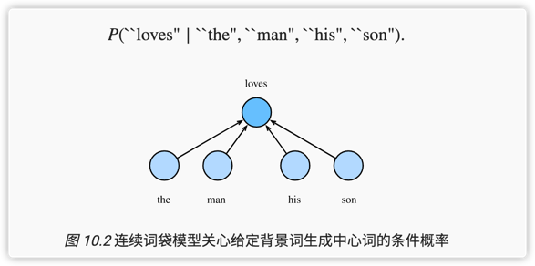

chapter 4.5 深度学习5 Word2vec
词嵌入（word embedding）是指把一个词映射为一个实数域的向量，这个向量也叫词向量。
word2vec是一个词嵌入模型，有两个变形，跳字模型和连续词袋模型。跳字模型是基于中心词来生成背景词。连续词袋模型假设基于背景词来生成中心词。
word2vec模型学习到了一个词的两个表示（背景词向量和中心词向量），下游节点用的是哪个呢？
总结
怎么对一个word编码？最简单的就是one-hot，即，先构建一次词典，然后用该word在词典中的索引来表示。
但是，one-hot的方法无法表达词语间语义上的相似性，所以提出来了词向量的方法，其中使用最多的一种是word2vec方法。为什么说one-hot vector说表达不了word在语义上的相似性？举个例子，假如用余弦函数来描述word之间的相似度，那么one-hot的表达方式，就会使所有word之间的相似度为0，这样就丢失了词语的语义上的信息。
Wod2Vec跟传统的线性降维方法如PCA一样，本质上都是在寻找对原始输入（词语）的一种更经济、高效的表达。PCA和Word2vec的区别在于，两者对于何为「最优表达」的定义不一样：
- PCA认为重构误差最小的表达，就是最好的表达。即经过编码-解码之后,重构回原来空间时，信息丢失尽可能少。
- Word2vec认为如果一个中心词的表达跟上下文表达关联最大，就是最好的表达。
在Word2vec中，每个词语都有两个表示，分别为中心词向量和背景词向量，取决于此刻该词语的角色。为了学习每个单词的中心词向量和背景词向量，Word2vec提出了两种模型，分别是以中心词预测背景词的跳字模型（Skip-gram）模型，和以背景词去预测中心词的连续词袋（Continuous Bag-of-Words，CBOW）模型。
跳字模型（skip gram）--基于中心词来生成背景词。跳字模型就是将一个中心词映射成多个背景词，大概思路，
对词典中每个词，构建2个向量表示，这个是待估参数。
类似多分类问题，构造一个映射函数，输入中心词的one-hot（长度为\(\mathcal{V}\)），输出背景词的概率分布（长度为\(\mathcal{V}\)）
类似逻辑回归的参数估计，使用交叉熵作为损失函数。
总体来说，从low-level，跳字模型，就很像是一个多分类的逻辑回归，跳字模型保留的是参数，而逻辑回归需要用的是输出的概率。
连续词袋模型（continous bag of words）是用背景词预测中心词的模型。以下图为例，一般使用连续词袋模型的背景词向量作为词的表征向量。
附录
连续跳字模型


假设有这么一段话，“the”“man”“loves”“his”“son”，那么输入背景词序列--the”“man”“his”“son”，连续词带模型会输出中心词为loves的概率。
跳字模型架构

跳字模型的推导
词典索引集： \(\mathcal{V} =\{0,1, \ldots,|\mathcal{V}|-1\}\)
假设某个词在词典中的索引为i，这个词被表示成2个d维向量:
- 中心词向量：\(\boldsymbol{v}_{i} \in \mathbb{R}^{d}\)
- 背景词向量：\(\boldsymbol{u}_{i} \in \mathbb{R}^{d}\)
模型的输出是条件概率，假设中心词\(w_c\)在词典中的索引为c，背景词\(w_o\)在词典中的索引为o，那么给定中心词生成背景词的条件概率为
\[P\left(w_{o} \mid w_{c}\right)=\frac{\exp \left(\boldsymbol{u}_{o}^{\top} \boldsymbol{v}_{c}\right)}{\sum\limits_{i \in \mathcal{V}} \exp \left(\boldsymbol{u}_{i}^{\top} \boldsymbol{v}_{c}\right)}\]
假设给定一个长度为 T 的文本序列，设时间步 t 的词为 w(t) 。假设给定中心词的情况下背景词的生成相互独立，当背景窗口大小为 m 时，跳字模型的似然函数即给定任一中心词生成所有背景词的概率 \[\prod\limits_{t=1}^{T} P\left(w^{(t-j)} ,... w^{(t+j)}\mid w^{(t)}\right) = \prod\limits_{t=1}^{T} \prod\limits_{-m \leq j \leq m, j \neq 0} P\left(w^{(t+j)} \mid w^{(t)}\right)\] 这里小于1或大于 T 的时间步可以被忽略。
参数估计方法：MLE, 即最大化如下对数似然函数来估计参数：
\[\max\limits_{u,v} \prod\limits_{t=1}^{T} \prod\limits_{-m \leq j \leq m, j \neq 0} P\left(w^{(t+j)} \mid w^{(t)}\right)\] 等价于最小化交叉熵: \(\min\limits_{u,v} -\sum\limits_{i=1}^{T} \sum\limits_{-m \leq j \leq m, j \neq 0} \log P\left(w^{(t+j)} \mid w^{(t)}\right)\)
由于 \[\log P\left(w_{o} \mid w_{c}\right)= \log(\frac{\exp \left(\boldsymbol{u}_{o}^{\top} \boldsymbol{v}_{c}\right)}{\sum\limits_{i \in \mathcal{V}} \exp \left(\boldsymbol{u}_{i}^{\top} \boldsymbol{v}_{c}\right)})=\boldsymbol{u}_{o}^{\top} \boldsymbol{v}_{c}-\log \left(\sum\limits_{i \in \mathcal{V}} \exp \left(\boldsymbol{u}_{i}^{\top} \boldsymbol{v}_{c}\right)\right)\]
损失函数相对于\(v_c\)的梯度 \[\begin{aligned} \frac{\partial \log P\left(w_{o} \mid w_{c}\right)}{\partial \boldsymbol{v}_{c}} &=\boldsymbol{u}_{o}-\frac{\sum_{j \in \mathcal{V}} \exp \left(\boldsymbol{u}_{j}^{\top} \boldsymbol{v}_{c}\right) \boldsymbol{u}_{j}}{\sum_{i \in \mathcal{V}} \exp \left(\boldsymbol{u}_{i}^{\top} \boldsymbol{v}_{c}\right)} \\ &=\boldsymbol{u}_{o}-\sum_{j \in \mathcal{V}}\left(\frac{\exp \left(\boldsymbol{u}_{j}^{\top} \boldsymbol{v}_{c}\right)}{\sum_{i \in \mathcal{V}} \exp \left(\boldsymbol{u}_{i}^{\top} \boldsymbol{v}_{c}\right)}\right) \boldsymbol{u}_{j} \\ &=\boldsymbol{u}_{o}-\sum_{j \in \mathcal{V}} P\left(w_{j} \mid w_{c}\right) \boldsymbol{u}_{j} \end{aligned}\]
训练结束后，对于词典中的任一索引为i的词，我们均得到该词作为中心词和背景词的两组词向量 \(v_i\) 和 \(u_i\) 。在自然语言处理应用中，一般使用跳字模型的中心词向量作为词的表征向量。
负采样
梯度上式的复杂度为|V|, 为了提高计算效率，有一个近似训练方案：负采样 和分层的softmax
负采样的想法是，模型的最后一层不用softmax，而是sigmoid,损失函数交叉熵：观测到就是正样本，没观测到就是负样本（通过对词典采样K次得到） \(P\left(w^{(t+j)} \mid w^{(t)}\right)=P\left(D=1 \mid w^{(t)}, w^{(t+j)}\right) \prod\limits_{k=1, w_{k} \sim P(w)}^{K} P\left(D=0 \mid w^{(t)}, w_{k}\right)\)
取对数就是
\(\begin{aligned}-\log P\left(w^{(t+j)} \mid w^{(t)}\right) &=-\log P\left(D=1 \mid w^{(t)}, w^{(t+j)}\right)-\sum_{k=1, w_{k} \sim P(w)}^{K} \log P\left(D=0 \mid w^{(t)}, w_{k}\right) \\ &=-\log \sigma\left(\boldsymbol{u}_{i_{t+j}}^{\top} \boldsymbol{y}_{i_{t}}\right)-\sum_{k=1, w_{k} \sim P(w)}^{K} \log \left(1-\sigma\left(\boldsymbol{u}_{h_{k}}^{\top} \boldsymbol{v}_{i_{t}}\right)\right) \\ &=-\log \sigma\left(\boldsymbol{u}_{i_{t+j}}^{\top} \boldsymbol{y}_{i_{t}}\right)-\sum_{k=1, w_{k} \sim P(w)}^{K} \log \sigma\left(-\boldsymbol{u}_{h_{k}}^{\top} \boldsymbol{v}_{i_{t}}\right) \end{aligned}\)
使用tensorflow实现一个跳字模型
建模
word2vec将每个词表示成一个定长的向量，并使得这些向量能较好地表达不同词之间的相似和类比关系
- 第一步：获取训练样本
- 第二步：构建1个神经网络
- 输入：上面的中心词的one-hot向量，形状为（词典大小，）
- 输出：中心词周围出现的词的概率向量（相近词的概率），形状也是（词典大小）

- 模型参数（or权重向量）的形状和含义：
- 网络 第一层有300（词向量长度）个单元，权重向量的形状是 (词典大小，词向量长度)，表示 每个词的中心词向量
- 网络 第二层有10000（词典大小）个单元，权重向量的形状是（词向量长度，词典大小），表示 每个词的背景词向量

评估
- 影响词向量质量的三个因素：
- 训练数据的数量和质量
- 词向量的大小
- 训练算法
google提供了 测试数据 和 测试脚本
- 先人工定义一些 近义词组，反义词组，不相关词组，计算这些词组的 余弦距离，看是否跟之前定义的语义距离 一致。
- 提供2份 相关性测试集（relation test set）:
- word relation test set :./demo-word-accuracy.sh,
- phrase relation test set:./demo-phrase-accuracy.sh
- 最好的结果：准确率 70% + 覆盖率 100%.
点积or余弦
点积和余弦, 差了一个量岗，即向量模长。Word2Vec训练的时候用的是点积，推断用的cos。
训练的时候之所以不用cos，而用点积，是因为如果先做cos，会将神经网络的输出限制到[-1, 1]，限制网络的表达能力
推断的时候，要用cos，例如找近义词。
word2vec是无监督还是有监督？

现在大家一般说有监督/无监督，总结下来，本质是从两个维度描述：
维度1： 是否需要人工标注
维度2： 是否使用supervised data来更新参数，
两个维度的取值为「 是」，就是有监督
两个维度的取值为「 否」，就是无监督
对于两个流派来说，这个是能达成共识的。
而如果维度2 认为「是」，维度1认为「否」的情况呢？ （也就是word2vec的情况）

做异常检测的时候，如果没有异常标记数据，
使用预测 + 极值检测 的方法，算是有监督还是无监督？
把预测 + 极值检测 看成一个黑盒，是无监督，
单独看时序预测，是自监督。

无监督训练中：一个模型在未标记的数据（或者全部数据） 上训练，使用了一个无监督的学习技术，然后对最后的带标记数据使用有监督学习的方式，进行微调；
无监督每次只训练一层，也可以直接训练整个模型
参考
- https://mk.woa.com/q/267975?strict=true&ADTAG=daily
- word2vec论文--Distributed Representations of Words and Phrases and their Compositionality
- dive into deep learning
- https://www.quora.com/Is-Word2vec-a-supervised-unsupervised-learning-algorithm
- Sherlock：Self-Supervised Learning 入门介绍
- word2vecd代码
- https://d2l.ai/chapter_natural-language-processing-pretraining/word2vec-pretraining.html